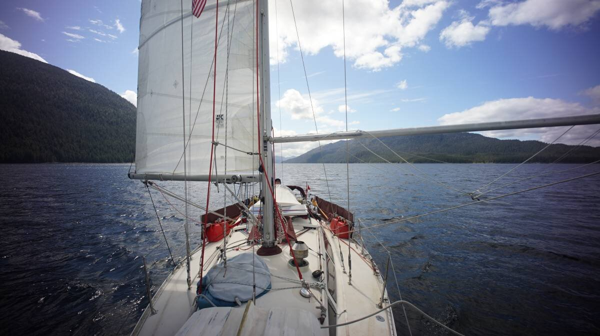
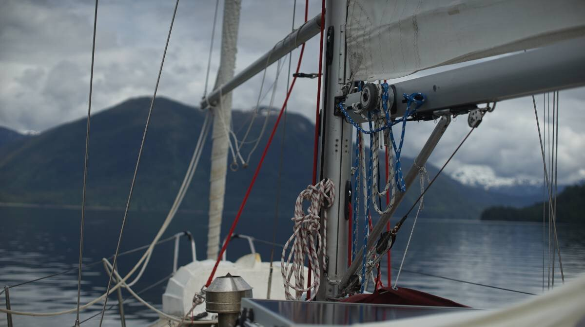

berg bay
What we refer to on this page as Berg Bay is on the traditional, stolen, unceded land of the Lingít Aaní (Tlingit) People and the Dënéndeh Nation.
On June 12th 2024, we left Frosty Bay and headed north into Blake Channel towards Berg Bay. The sun was with us that day, a very nice surprise!
The wind was coming out of the south, we were able to sail wing-on-wing to Point Warde, after that the wind either changed too much, or was gone entirely. We doused the jib, and kept the main up in case more wind returned. The current was with us, in fact, it only turned at 1100, so we left Frosty Bay later than we would have liked(sailing in the morning so much nicer).
Blake Channel offers amazing view of snow-capped mountains, we saw many on our 15 NM long journey.
Once around Point Warde, it was like sailing to Princess Louisa Inlet, the channel turns, and every turn reveals a different kind of beautiful. A seal popped out and made a back flip just as we reached Blake Island-what a nice way to welcome us to the area, we thought.
We saw a lot of waterfalls along the channel, we'd always see where they empty into the channel first, then we'd grab the binoculars and try to catch it through the trees, all the way to the top of the mountain. The ones snaking along cliff walls are easy to spot.
When we neared Berg Bay, at the end of the last reach, the water turned from blue to an amazing jade tint. The color may be due to snowmelt, we had a little bit of current against us for a while, so it is a likely culprit.
"What's that white thing over there?" Devine asked, staring ahead. "White thing?" I said, can't be ice... I thought, not here, impossible. I grabbed our binoculars. Not ice, no, t'was a large motor boat, anchored at the head of Berg Bay. Boo.
Berg Bay is a long narrow arm, with a few islands guarding its entrance. A cabin is nested in the far corner, we also saw a barge carrying crab traps in the north west corner. We had read that sometimes a lot of crab traps are laid here, making it difficult for more boats to anchor, we saw the barge but no crab traps were laid down. The Berg Bay crabs were safe today.
The motor boat was anchored near the ranger cabin, we anchored far behind them in 65 feet. We only stayed in this beautiful place for one night. The wind was coming from the head of the bay when we arrived, then switched to the south later, but it died down in the evening. A south wind creates a bit of light chop in the bay, but it wasn't too bad. Tomorrow, we continued up Blake Channel to Wrangell.